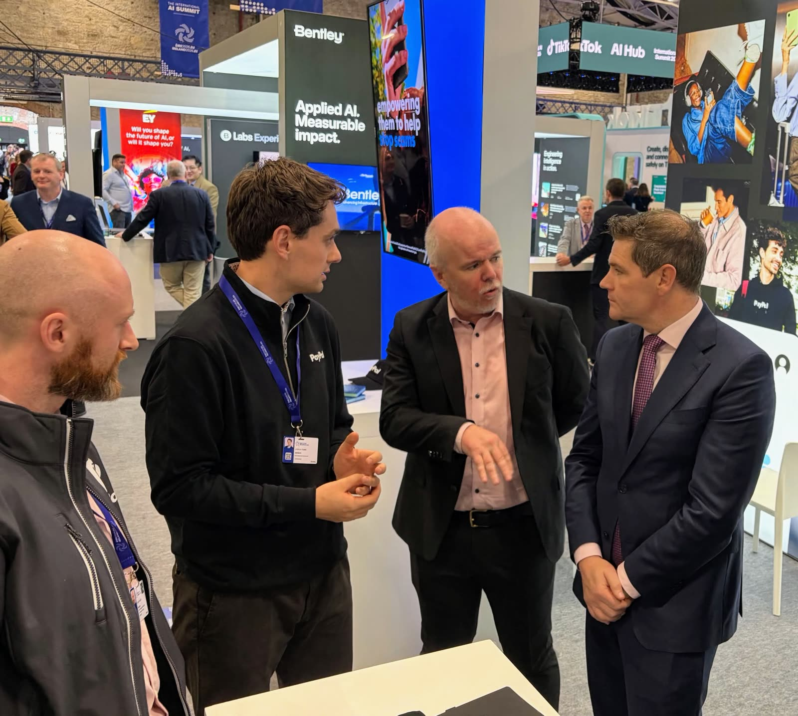

Context
I'm a Staff Machine Learning Engineer on PayPal's Onboarding and Early Lifecycle Fraud Detection team. The work focuses on identifying and mitigating fraudulent activity during the earliest stages of a customer's relationship with the platform — production machine learning in a high-stakes environment, where decisions have to balance fraud prevention, customer experience, operational constraints and the cost of incorrectly blocking legitimate users.


International AI Summit, 2026
The problem
Model quality here can't be reduced to a single offline metric. Effective systems have to respond to changing behaviour, operate reliably at scale, and distinguish genuine risk from the normal complexity of legitimate customers. The engineering questions that actually shape the work:
- How do you detect evolving fraud patterns without adding unnecessary friction for legitimate customers?
- How do you evaluate models when different errors carry very different costs?
- How do you design a portfolio of models rather than treating each one as an isolated artefact?
- How do you move a technically strong model into dependable production use?
My role
I work on one of the team's models and on the evolution of the broader model portfolio — implementation and modelling, but also some mentorship and technical direction along the way. I've mentored two interns, contributed to a portfolio redesign, and filed two patent applications. I also started a small patent group in PayPal's Dublin office, mostly so colleagues with a patentable idea have somewhere to start.
What I learned
The confidential nature of fraud detection limits what I can publish about the underlying systems, but the work has deepened my interest in production ML, portfolio-level model design, and the relationship between technical performance and real operational outcomes. I'm increasingly interested in machine-learning architecture above the level of an individual model — how models, data, decision systems and evaluation processes fit together as an evolving portfolio, rather than a collection of independent projects.